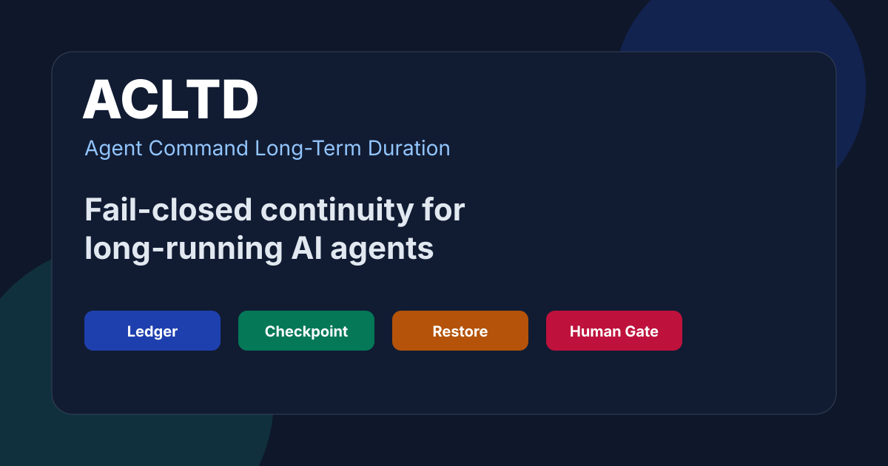

Homologation-ready recovery infrastructure
ACLTD: Agent Command Long-Term Duration
ACLTD is a fail-closed continuity and recovery layer for long-running AI agents that must survive lost sessions, process failures, provider swaps, and incomplete handovers.
It keeps verifiable persistent records as the source of truth and treats MCP as an interface boundary, not a memory substitute.

Deterministic
Restores state from ledger, checkpoint, and anchor records rather than model memory.
Auditable
Preserves sourced facts, hash chains, gaps, and validation evidence for human review.
Fail-Closed
Refuses corrupted, rolled-back, malformed, or ambiguous recovery state.